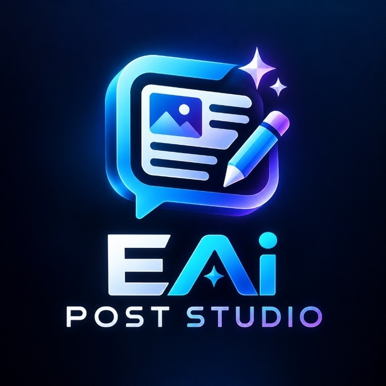

EAi POST STUDIOTEST · 0.55ИЗ «СОХРАНЮ НА ПОТОМ» — В «УЖЕ ОПУБЛИКОВАЛ»
Пост, который
хочется сохранить.
Собери идею, PROMPT и фото в публикацию
с твоим характером. Прямо в Telegram.
Всегда под рукой
ТВОЙ РАБОЧИЙ СТОЛПервый шаг уже придуман.
Осталось добавить тебя.
7 заготовок: от поста-знакомства до подборки находок.
Без регистрации на сайте — открой и адаптируй.